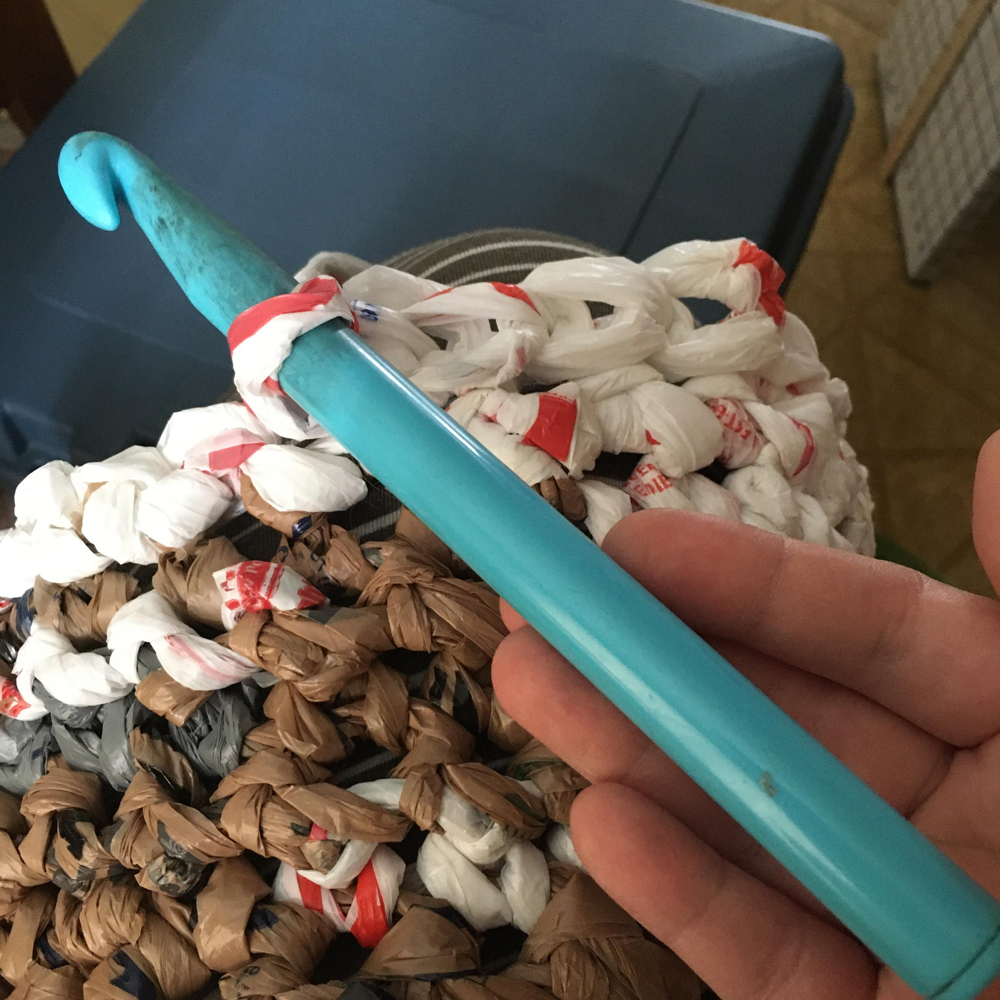

textile hooks revision 3709
^ Project infobox ^^
| image | Crochet-hook.scad.png |
| designer | [[user:tim|Timothy Schmidt]] |
| date | 2021 |
| tools | [[3d_printers|3D printers]] |
Challenges
Approaches
Plarn

Plarn is a plastic yarn made from used plastic shopping bags. It can be woven, knitted, or crocheted into mats, rugs, curtains, etc using a size J to N hook.